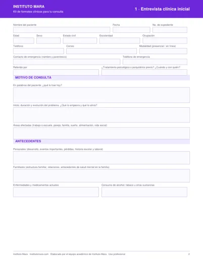
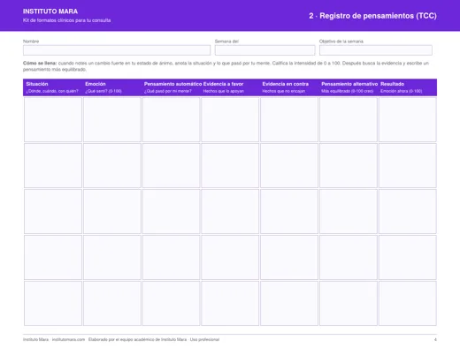
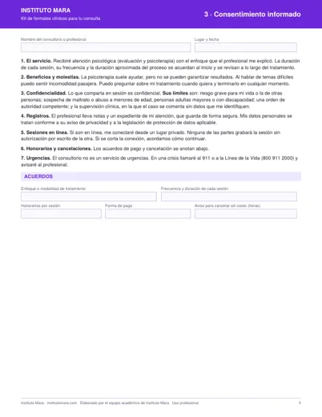
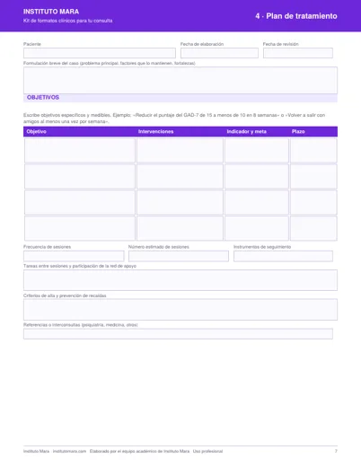

Cuatro formatos editables, listos para usar desde tu próxima sesión. Llénalos en la computadora o imprímelos.
Elaborado por el equipo académico de Instituto Mara, con formación en psicología.
Te lo mostramos aquí mismo y te lo enviamos a tu correo.
También te lo enviamos a . Si no lo ves, revisa tu carpeta de promociones o spam.
Descargar el kit (PDF)Con la marca de Instituto Mara y espacios para llenar en pantalla. Adáptalos a tu enfoque y a tu institución.

Dos páginas, con evaluación de riesgo y examen mental breve.

Hoja horizontal con intensidad de 0 a 100.

Incluye firmas de paciente, tutor y profesional.

Objetivos, intervenciones, indicadores y plazos.
Ordena tus primeras sesiones y deja constancia de lo que acuerdas con cada paciente.
Llega a tu servicio social o tus prácticas con formatos claros y completos.
Úsalos como material de clase o como base para revisar casos con tu equipo.
No. El kit es gratis. Solo te pedimos tu nombre y correo para enviártelo.
Sí. Se llenan en Adobe Acrobat Reader, en Vista Previa de Mac o desde el navegador, y puedes guardar una copia por paciente. También puedes imprimirlos.
No. Son formatos de apoyo. Ajústalos al código ético de tu gremio, a tu aviso de privacidad y a la normativa que aplique a tu servicio.
Los usamos para enviarte el kit y algunos correos con ideas prácticas y ofertas de Instituto Mara. Cada correo trae una liga para darte de baja. No vendemos ni compartimos tus datos.